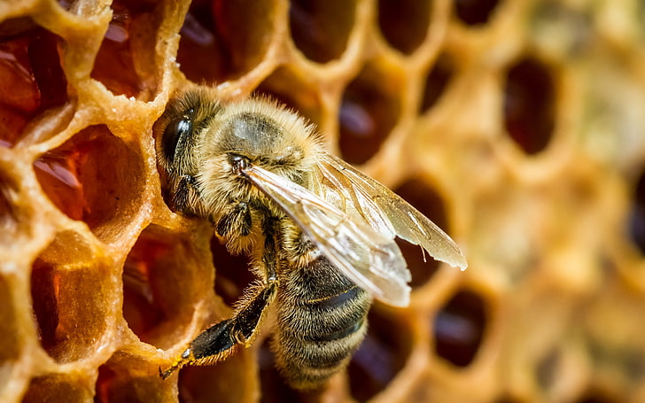

ANIMAL HUSBANDRY
BEE FARMING

Beekeeping (or apiculture) is the maintenance of bee colonies, commonly in man-made hives, by humans. Most such bees are honey bees in the genus Apis, but other honey-producing bees such as Melipona stingless bees are also kept. A beekeeper (or apiarist) keeps bees in order to collect their honey and other products that the hive produce (including beeswax, propolis, flower pollen, bee pollen, and royal jelly), to pollinate crops, or to produce bees for sale to other beekeepers. A location where bees are kept is called an apiary or "bee yard".